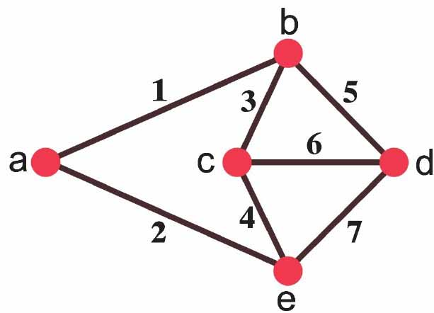
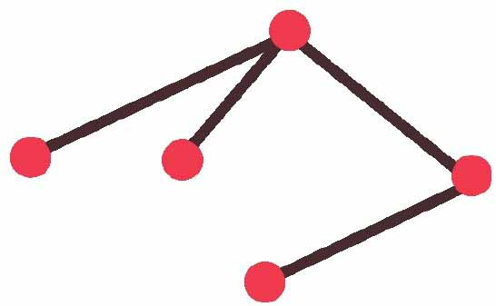
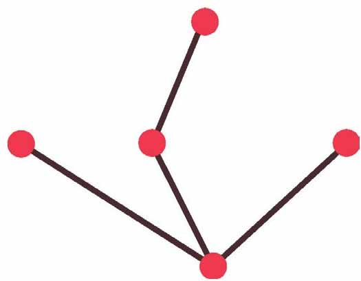
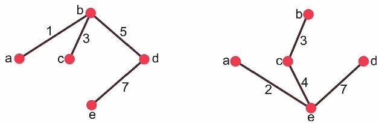
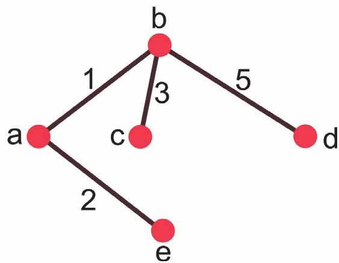
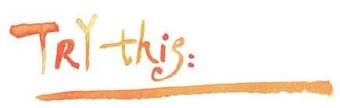
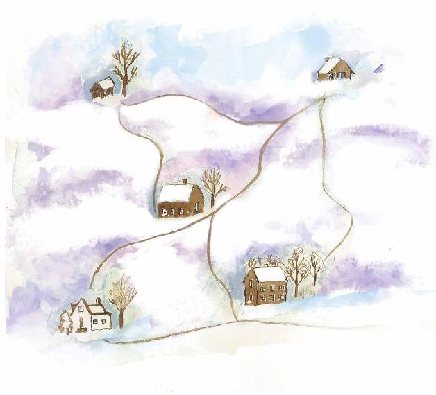

在5栋楼房之间规划一个电话网，如果对时间和花费没有什么特殊限制，可以将每栋楼房与其他4栋楼房尽可能多地用电话线连接起来。下图是一种连接方案的图模型，边上的数字表示两栋楼房之间铺设管线所需的费用。

5栋楼房之间规划的一个电话网
但是，如果负责规划的设计师约翰被告知：目前经费比较紧张，希望能尽可能少花费一些。这样，就得重新考虑了，约翰想，两栋楼房之间的通信其实可以通过其他楼房的转接来完成，因此，他重新规划了电话网络图。

重新规划的电话网
我们现在已经知道了，像上图这样的连通并且没有回路的图被称为树。
在这棵树中，包含原图中所有的顶点，这样的树叫作原图的生成树（Spanning tree），一个图的生成树往往不止一棵，下面的图也是原图的一棵生成树。

约翰将这两棵生成树中边的权值相加，发现这两种铺设管线方案的总费用都是16。

权值相加都是16
那么，这是不是最佳方案呢？
约翰通过一番比画，又找到一种铺设管线的方法，其权值为11。

权值相加是11
到目前为止，这是他找到的最好的解决方案。他想，就这样吧，明天将这个方案交上去，然后打算钓鱼去，他刚看了天气预报，明天是个好天气。
克鲁斯卡尔（Joseph Bernard Kruskal）和普林（Robert Clay Prim）分别在1956年和1957年给出了构建最小生成树的算法。
借助克鲁斯卡尔和普林的最小生成树算法验证，设计师约翰钓鱼前最后想出的方案确实是最经济的一种铺设管线的方案。
普林算法和克鲁斯卡尔算法比较相似，只不过两个算法选择边的规则有所不同。它们都属于贪心算法，所谓贪心算法就是在每个步骤上都选择最优的算法，但有时候，在算法的每个步骤上最优化，并不能保证产生全局的最优解。不过，普林算法和克鲁斯卡尔算法都是能产生最优解的贪心算法。当克鲁斯卡尔是二年级研究生的时候，他设计了最小生成树的算法，他以此为题写了篇论文，论文只有两页半。他有点犹豫是否应该拿出去发表，经其他人说服后他才递交了出去。
不过，说起来，他们都不是最早研究最小生成树算法的人，人类学家扬·切卡诺夫斯基（Jan Czekanowski）在1909年曾研究过最小生成树。1926年，奥塔卡·勃鲁乌卡（Otakar Boruvka）在构造电力网有关的工作中也描述了构造最小生成树的方法。

小文，你还在看吗，没有打瞌睡吧？
如果没打瞌睡的话，下面这个问题交给你试试：冬天到了，积雪很厚，各家各户的小伙伴打算扫雪了。但他们希望偷偷懒——只想扫尽可能少的积雪。小文，你尝试用最小生成树的方法帮他们想个办法吧。

下面介绍一下最小生成树在计算机网络中的一个应用。
在计算机局域网中，有一种回路叫交换回路，交换回路很容易造成广播风暴，使局域网带宽下降，生成树协议利用生成树算法，可以创建一个以某台交换机的某个端口为根的生成树，从而避免因交换回路而形成的广播风暴。生成树协议是由号称“互联网之母”的拉迪亚·珀尔曼（Radia Perlman）博士设计的。